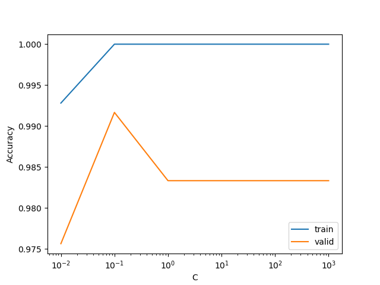

Determining the origin of wine using physiochemical properties#
by Hina Bandukwala, Yimeng Xia, Sean McKay, Julia Everitt 2023/12/02
Show code cell content
import sys
import pickle
import pandas as pd
from myst_nb import glue
import warnings
import numpy as np
from sklearn.exceptions import InconsistentVersionWarning
warnings.filterwarnings("ignore", category=InconsistentVersionWarning)
Show code cell content
#Attribution: Code adapted from
#https://github.com/ttimbers/breast_cancer_predictor_py/blob/main/report/
#breast_cancer_predictor_report.ipynb
test_scores_df = pd.read_csv("../results/tables/test_results.csv")
glue("accuracy", test_scores_df['accuracy'].values[0], display=False)
glue("f1", test_scores_df['F1 score'].values[0], display=False)
test_scores_df = test_scores_df.style.format().hide()
glue("test_scores_df", test_scores_df, display=False)
Show code cell content
with open('../results/models/wine_pipeline.pickle', 'rb') as model:
wine_model = pickle.load(model)
glue("best_C", wine_model.best_params_["logisticregression__C"], display=False)
glue("train_score", np.mean(wine_model.cv_results_["mean_train_score"]), display=False)
glue("valid_score", np.mean(wine_model.cv_results_["mean_test_score"]), display=False)
Summary#
With this project, we attempted to build a classification model as a proof-of-concept for how logistic regression can be used for classifying wine samples based on their origin using their physiochemical characteristics. We built our classifier using a simple dataset that summarizes 13 physiochemical properties per wine sample along with it’s corresponding class based on it’s origin/cultivar. Since we are using a “perfect” dataset, our final classifer performed very well on the unseen test wine samples with an accuracy score of 0.98 and a F1 score of 0.98.
With this project, we intend to showcase that this methodology has potential of streamlining wine identification processes for the benefit of the industry. Since this model is intended as a proof-of-concept, it can be improved significantly by considering other important physiochemical features and modern techniques for feature selection. The model can also be refined with a larger and more complex datasets.
Introduction#
With increased globalization, wine is consumed across a wider range of nations making wine trade an important part of the global economy [Orlandi et al., 2015]. For example, in 2021 wine exports increased by an average of 15% since 2017 reaching a global total of $40.7 billion[Jain et al., 2023]. Italy is one of the top 5 exporters of wine and together these countries contribute to 70.4% of the total wine exported globally[Jain et al., 2023]. As wine consumption becomes integrated into more cultures, there is an increased need for faster and efficient methods for wine certification, identication as well as quality evaluation. Our project focuses on one of those, namely, wine identification.
Identification of the wine cultivar (e.g. ‘Chardonnay’ and ‘Merlot’) is an important element of consuming and selling wine[Ohana-Levi and Netzer, 2023]. Traditional methods rely heavily on the knowledge and experience of indivdual experts which makes the process inherently subjective and labour-intensive. In this project, we aim to use a machine learning algorithm to identify the cultivar of Italian wines using 13 different physiochemical properties instead. This method takes advantage of the dense knowledge-base that exists about the important physiochemical properties of wine. It then utilizes quantitative measurements corresponding to these properties along with machine learning to systematically identify wine cultivars. Given that the wine industry has carved itself a name in global trade, it is crucial to develop and apply cutting-edge methods that can make these processes more accurate, less labour-intensive and cost-efficient. We think that this data-driven approach could be highly beneficial to the wine industry due to the benefits highlighted above.
Methods#
Data#
We are using a multivariate dataset for this project that combines 13 physiochemical properties for 178 Italian wine samples. These samples correspond to 3 distinct cultivars from the same geographical location. The data was originally collected by M.Forina et al [Forina et al., 1998] and contributed to the UC Irvine Machine Learning Repository by Stefan Aeberhard and M. Forina in 1992 (last updated on Aug 28 2023). Details associated with the dataset can be found in the UC Irvine repository (https://archive.ics.uci.edu/dataset/109/wine) and the data can be read directly from here (https://archive.ics.uci.edu/static/public/109/data.csv). Each row of the dataset corresponds to one wine sample and contains measurements corresponding to each of the 13 physiochemical components. Identification and quantification of the different chemical constituents and properties of the wine was based on chromatographic profiles obtained through mass spectrometry[Ballabio et al., 2008]. This collection and experimentation was performed by Ballabio, D. et al.
Analysis#
For our classification task, we used the logistic regression (LR) algorithm to develop a model that categorizes wine samples into one of three cultivar types based on their origin. These targets can be found in the class column of our dataset. All physiochemical features included in our dataset were used for classification. As a benchmark, we employed scikit-learn’s DummyClassifer as our baseline model which resulted in a 40.33% accuracy with our training dataset. For the LR model, a grid search for the C hyperparameter was performed for values ranging from 0.01 to 1000. The optimal value of 0.1 was used to perform a 10-fold cross-validation and resulted in a accuracy of 0.999 with our training set and 0.983 with our validation set. We primarily used the Python programming language for our analysis. In particular, the following packages were used: NumPy[Harris et al., 2020], Pandas[Wes McKinney, 2010], Altair[VanderPlas et al., 2018], Matplotlib [Hunter, 2007], scikit-learn[Pedregosa et al., 2011], and ucimlrepo [Aeberhard and Forina, 1991].
Methods#
We first separated our dataset into random train and test sets using sklearn’s train_test_split. The split between train and test sets was 70:30% respectively. We ensures that there would be an equal distribution of target classes across the two sets with the stratify argument. Additionally, a random_state was defined to ensure the reproducibility of our results.
Please note that the test set was not used to inform any decisions during the analysis except for the final evaluation of our model.
EDA#
Using the train set, we first looked at the distribution of values for each numerical feature for each of the three target classes. We can see that the density curves overlap, but still show different shapes and mean values, with some exhitibiting bimodal distributions. The least predictive features look to be Magnesium and Ash as there is significant overlap between the 3 class distributions. We decided to keep all of the features to use in our model, as those features may still be more predictive when combined with other features.
#FIXME Add class imbalance
#FIXME Add class imbalance plot
Figure 1: Density plots per class of wine for the 13 physiochemical properties included in the dataset.
Preprocessing#
All the features in the dataset are numerical and take on different ranges. We standardized them using sklearn’s StandardScaler with default parameters which does so by removing the mean and scaling to unit variance. Standardization is essential since it prevents features with large variances from dominating the objective function. StandardScaler ensures a consistent scale across features, which aligns with the assumption that logistic regression makes i.e. that features are approximately normally distributed with 0 mean and unit variance.
We used sklearn’s ColumnTransformer to create our preprocesser object that implemented the StandardScaler. The preprocessor was fit on the train set and then used to transform both the train and test sets.
The preprocessor object was pickled and can be found in the project directory under results/models preprocessor_model.pickle.
Model Building#
Next, we built our LR model with sklearn’s LogisticRegression. Logistic regression was our linear model of choice because it is simple, easy to implement/interpret and can also extend to multiple classes (as is the case with our dataset).
To find the optimal value of the hyperparameter C for our LR model that maximized the accuracy score, we performed a 10-fold cross-validated grid search with sklearn’s GridSearchCV.
The GridSearchCV object was constructed using the following parameter grid 0.01, 0.1, 1, 10, 100, 1000 and a pipeline object made with sklearn’s make_pipeline that implemented StandardScaler and LogisticRegression with max_iter of 2000. The GridSearchCV object was fit on the training set. The pickled object can be found here: results/models/wine_pipeline.pickle.
Finally, the model was scored on the test set and the resulting f1 and accuracy scores were used to assess model performance.
Results#
In terms of the model performance and its applicability to wine origin prediction, our current logistic regression model performs quite well on unseen test samples

Figure 2: Accuracy scores for training and validation sets during hyperparameter optimization.
| accuracy | F1 score |
|---|---|
| 0.981000 | 0.982000 |
Table 1: Accuracy and F1 scores after model scoring on the test set.
Discussion#
To further improve the classification accuracy, we may explore other models such as Support Vector Machines (SVM) and Random Forest to assess if they offer improved test accuracy. In addition, diversifying our evaluation metrics can provide a more comprehensive understanding of our model’s performance.
Limitations#
Metrics such as precision, recall, F1-score are good choices for imblanced class. According to our baseline model, the accuracy is of 40.33%, indicates that the most prevalent class occurs at a rate of 40%. This suggests a class imbalance (as we have three classes)
References#
- AF91
Stefan Aeberhard and M. Forina. Wine. UCI Machine Learning Repository, 1991. DOI: https://doi.org/10.24432/C5PC7J.
- BSLB08
Davide Ballabio, Thomas Skov, Riccardo Leardi, and Rasmus Bro. Classification of GC-MS measurements of wines by combining data dimension reduction and variable selection techniques. Journal of Chemometrics, 22(8):457–463, 2008. _eprint: https://onlinelibrary.wiley.com/doi/pdf/10.1002/cem.1173. URL: https://onlinelibrary.wiley.com/doi/abs/10.1002/cem.1173 (visited on 2023-12-02), doi:10.1002/cem.1173.
- FLCL98
Michele Forina, Riccardo Leardi, Armanino C, and Sergio Lanteri. PARVUS: An Extendable Package of Programs for Data Exploration. Elsevier, January 1998. ISBN 978-0-444-43012-0.
- HMvdW+20
Charles R. Harris, K. Jarrod Millman, Stéfan J. van der Walt, Ralf Gommers, Pauli Virtanen, David Cournapeau, Eric Wieser, Julian Taylor, Sebastian Berg, Nathaniel J. Smith, Robert Kern, Matti Picus, Stephan Hoyer, Marten H. van Kerkwijk, Matthew Brett, Allan Haldane, Jaime Fernández del Río, Mark Wiebe, Pearu Peterson, Pierre Gérard-Marchant, Kevin Sheppard, Tyler Reddy, Warren Weckesser, Hameer Abbasi, Christoph Gohlke, and Travis E. Oliphant. Array programming with NumPy. Nature, 585(7825):357–362, September 2020. Number: 7825 Publisher: Nature Publishing Group. URL: https://www.nature.com/articles/s41586-020-2649-2 (visited on 2023-12-02), doi:10.1038/s41586-020-2649-2.
- Hun07
J. D. Hunter. Matplotlib: a 2d graphics environment. Computing in Science & Engineering, 9(3):90–95, 2007. doi:10.1109/MCSE.2007.55.
- JKG+23(1,2)
Khushboo Jain, Keshav Kaushik, Sachin Kumar Gupta, Shubham Mahajan, and Seifedine Kadry. Machine learning-based predictive modelling for the enhancement of wine quality. Scientific Reports, 13(1):17042, October 2023. Number: 1 Publisher: Nature Publishing Group. URL: https://www.nature.com/articles/s41598-023-44111-9 (visited on 2023-12-02), doi:10.1038/s41598-023-44111-9.
- OLN23
Noa Ohana-Levi and Yishai Netzer. Long-Term Trends of Global Wine Market. Agriculture, 13(1):224, January 2023. Number: 1 Publisher: Multidisciplinary Digital Publishing Institute. URL: https://www.mdpi.com/2077-0472/13/1/224 (visited on 2023-12-02), doi:10.3390/agriculture13010224.
- OTAF15
Fabio Orlandi, Bonofiglio Tommaso, F. Aguilera, and M. Fornaciari. Phenological characteristics of different winegrape cultivars in central italy. Vitis - Journal of Grapevine Research, 54:129–136, 01 2015.
- PVG+11
F. Pedregosa, G. Varoquaux, A. Gramfort, V. Michel, B. Thirion, O. Grisel, M. Blondel, P. Prettenhofer, R. Weiss, V. Dubourg, J. Vanderplas, A. Passos, D. Cournapeau, M. Brucher, M. Perrot, and E. Duchesnay. Scikit-learn: machine learning in Python. Journal of Machine Learning Research, 12:2825–2830, 2011.
- VGH+18
Jacob VanderPlas, Brian Granger, Jeffrey Heer, Dominik Moritz, Kanit Wongsuphasawat, Arvind Satyanarayan, Eitan Lees, Ilia Timofeev, Ben Welsh, and Scott Sievert. Altair: interactive statistical visualizations for python. Journal of Open Source Software, 3(32):1057, 2018. URL: https://doi.org/10.21105/joss.01057, doi:10.21105/joss.01057.
- WesMcKinney10
Wes McKinney. Data Structures for Statistical Computing in Python. In Stéfan van der Walt and Jarrod Millman, editors, Proceedings of the 9th Python in Science Conference, 56 – 61. 2010. doi:10.25080/Majora-92bf1922-00a.